File list
Jump to navigation
Jump to search
This special page shows all uploaded files.
{kind=link}
{kind=link}
| Date | Name | Thumbnail | Size | User | Description | Versions |
|---|---|---|---|---|---|---|
| 12:50, 21 March 2017 | Gxfemale.png (file) | 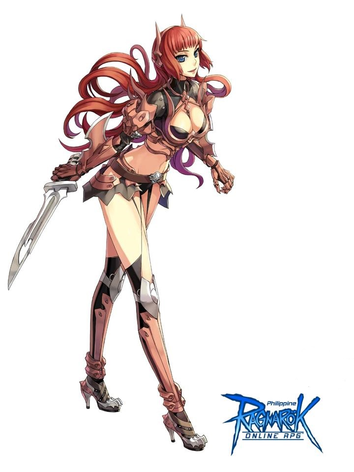 | 393 KB | Souleaterexe | 1 | |
| 16:09, 22 November 2019 | OSCmachines.png (file) | 394 KB | Hatsumei | 1 | ||
| 20:34, 7 September 2016 | TransportVD.png (file) | 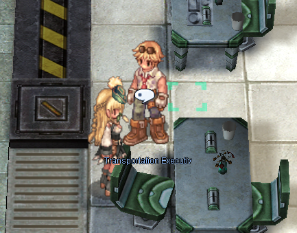 | 395 KB | Mayo | 1 | |
| 03:56, 1 December 2018 | Gear Swapping 3.jpg (file) | 395 KB | Hakumen | 1 | ||
| 06:54, 15 October 2016 | Suno.png (file) | 395 KB | Fretless | 1 | ||
| 20:13, 18 May 2017 | MW2.png (file) |  |
397 KB | DualityDiscretion | 1 | |
| 17:46, 9 April 2023 | SN Pneuma Blocks Pain.jpg (file) | 404 KB | G5457s | 1 | ||
| 22:20, 19 November 2015 | Horrorpic.png (file) | 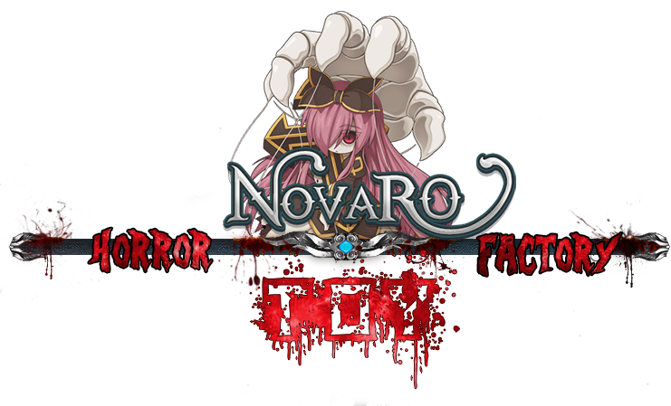 | 405 KB | Adri | 1 | |
| 20:17, 29 August 2017 | Draftphase.png (file) | 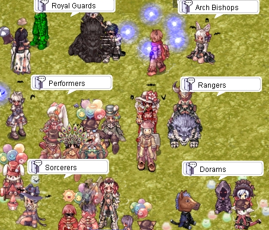 | 409 KB | Shalltear | 1 | |
| 05:38, 8 May 2018 | Ninjasupplier.png (file) | 410 KB | Ketalar | 1 | ||
| 04:03, 6 September 2018 | OhnoTohiro.png (file) | 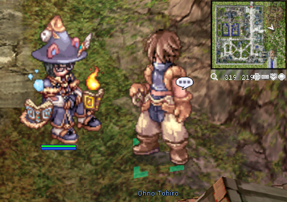 | 411 KB | Mallinock | 1 | |
| 20:14, 18 May 2017 | MW4.png (file) | 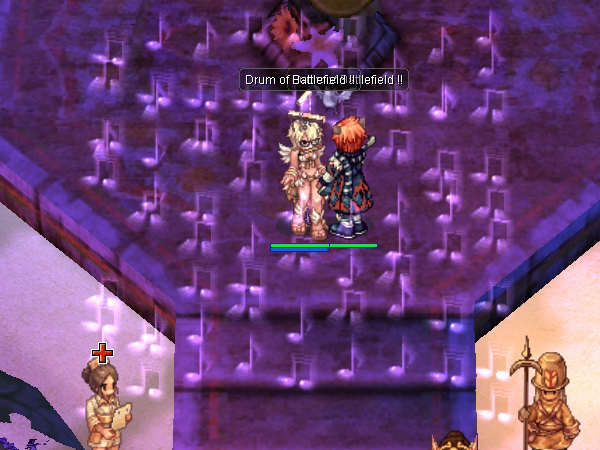 | 412 KB | DualityDiscretion | 1 | |
| 20:12, 7 September 2016 | NurseVD.png (file) | 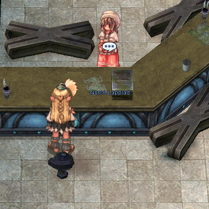 | 420 KB | Mayo | 1 | |
| 12:00, 17 November 2016 | ALTGX.png (file) | 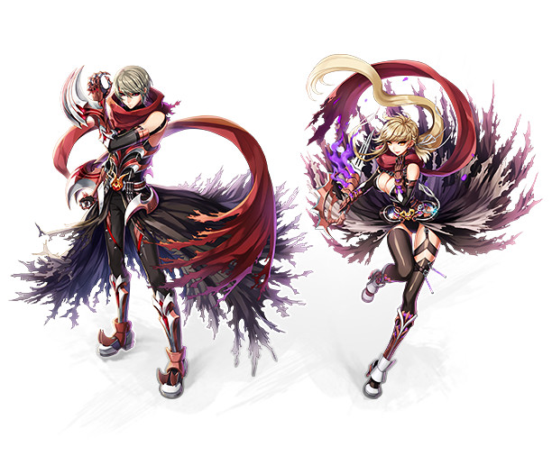 | 422 KB | Sanoshi | 1 | |
| 04:11, 7 April 2021 | Modelo Guias Rag.png (file) | 422 KB | Marynia | 1 | ||
| 05:47, 27 February 2019 | CBG.png (file) |  |
428 KB | Colours | 1 | |
| 23:16, 6 October 2018 | AlchSup.png (file) | 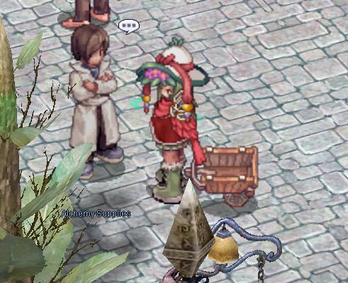 | 432 KB | AloeLeaflet | 1 | |
| 11:53, 13 December 2022 | Test Talisman 2.png (file) | 435 KB | Tamugi | 1 | ||
| 21:47, 8 October 2018 | AloeEvoLif2.png (file) | 436 KB | AloeLeaflet | 1 | ||
| 13:40, 11 January 2016 | Doram0.png (file) | 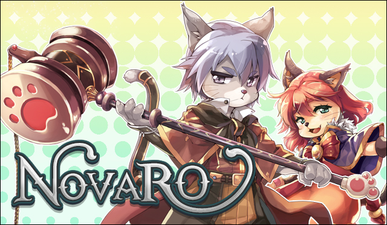 | 437 KB | Adri | 2 | |
| 20:14, 18 May 2017 | MW6.png (file) | 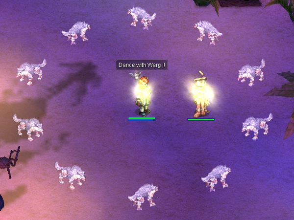 | 440 KB | DualityDiscretion | 1 | |
| 17:07, 7 May 2018 | Character Oboro.png (file) | 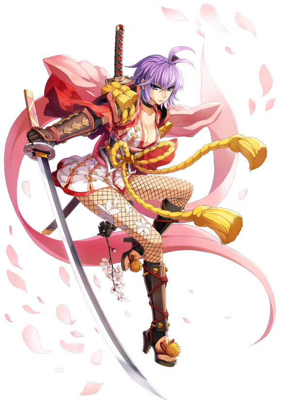 | 440 KB | Ketalar | For a class guide being made, had to change format for the box template. | 1 |
| 15:13, 2 August 2017 | ME wave damage.PNG (file) | 444 KB | Renata | 1 | ||
| 16:10, 12 April 2018 | Alloelifulet.png (file) | 446 KB | AloeLeaflet | 1 | ||
| 16:59, 27 March 2016 | Introreg.jpg (file) | 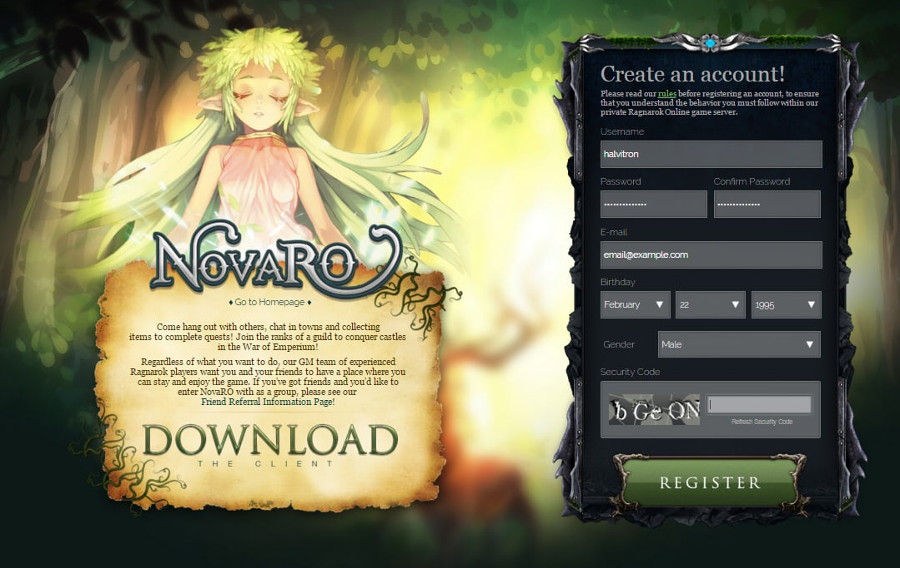 | 447 KB | Halves | 1 | |
| 20:27, 3 February 2016 | OGH 11.png (file) | 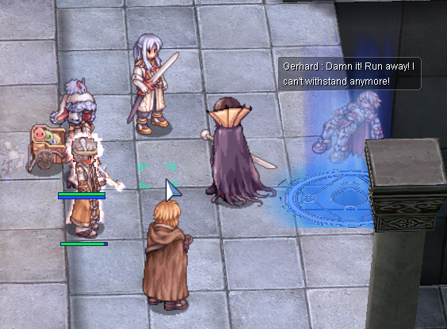 | 449 KB | Aristiel | 1 | |
| 18:24, 2 October 2016 | Guillotinecross.png (file) | 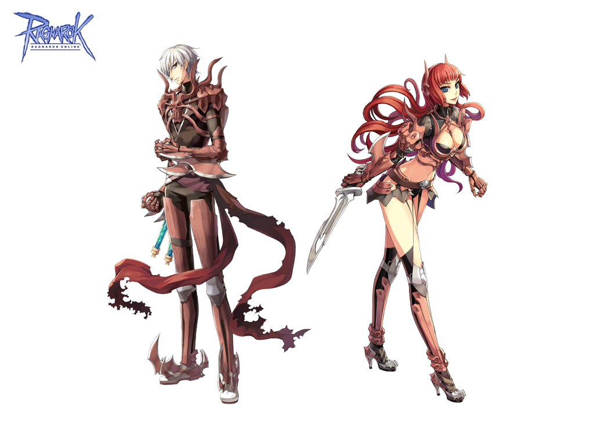 | 451 KB | Windrell | 1 | |
| 18:00, 7 September 2016 | GrapeVD.png (file) |  |
458 KB | Mayo | 1 | |
| 14:12, 15 June 2018 | RO Rebel(SD).png (file) | 461 KB | Kowloons | 1 | ||
| 00:17, 17 September 2015 | Squest1.png (file) | 463 KB | AloeLeaflet | 1 | ||
| 20:14, 18 May 2017 | MW3.png (file) | 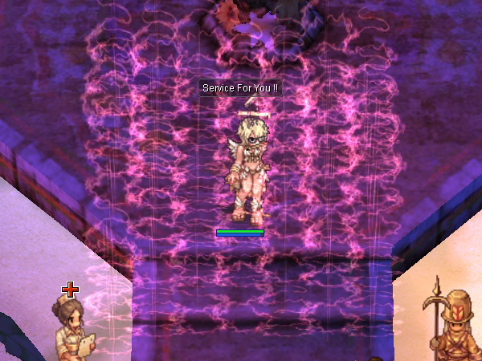 | 464 KB | DualityDiscretion | 1 | |
| 05:44, 23 April 2022 | Miyu arch mage art.png (file) | 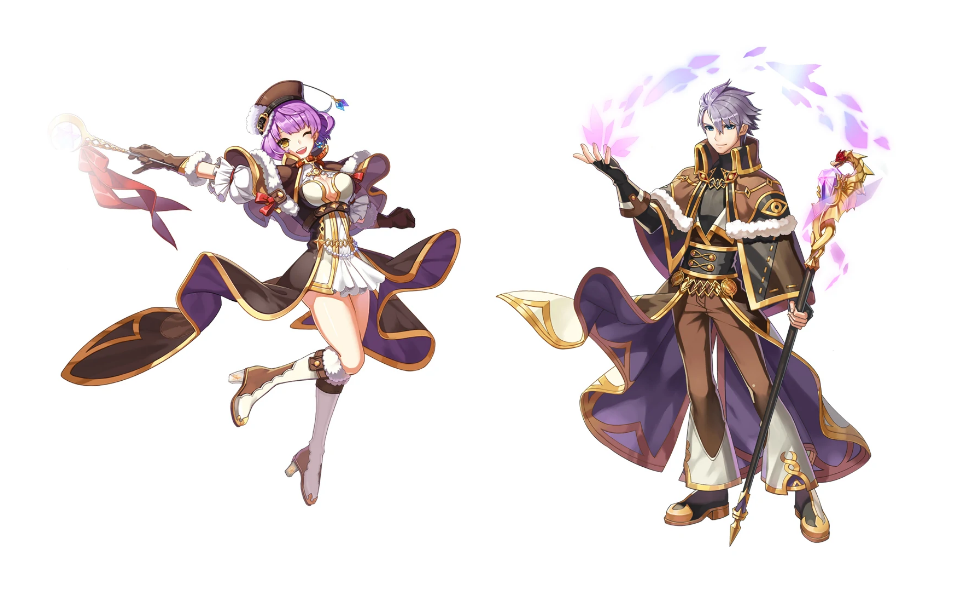 | 466 KB | Miyu | 1 | |
| 20:53, 3 February 2016 | OGH3.png (file) | 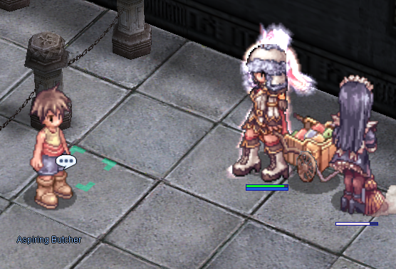 | 471 KB | Aristiel | 2 | |
| 21:01, 18 March 2023 | Villa of deception overview.png (file) |  |
475 KB | Yorutia | 1 | |
| 19:24, 8 July 2019 | Fracture 1.png (file) | 482 KB | I Know To Write | 1 | ||
| 13:21, 17 March 2016 | Class Tree.png (file) | 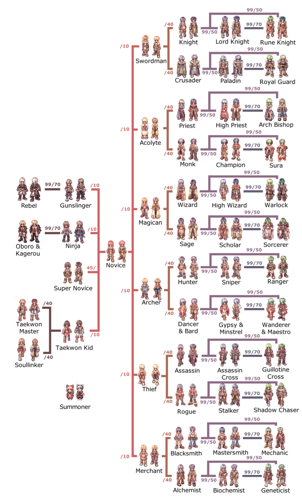 | 484 KB | Halves | 2 | |
| 10:02, 4 December 2015 | CLS TREE.png (file) | 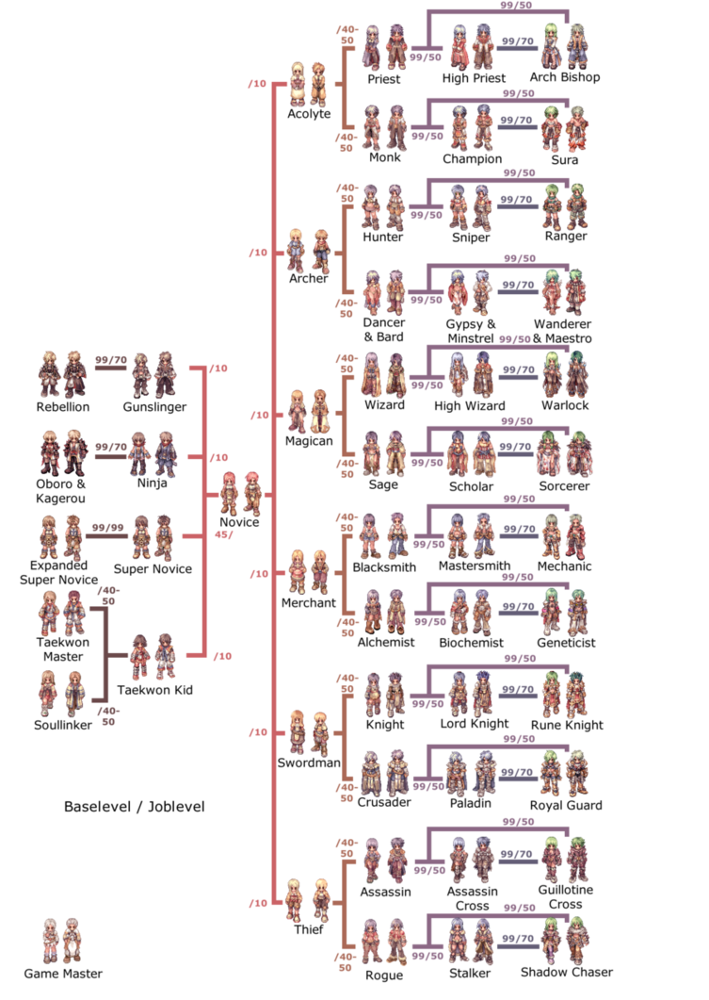 | 484 KB | Halves | 1 | |
| 02:23, 18 September 2015 | Alchemguild.png (file) | 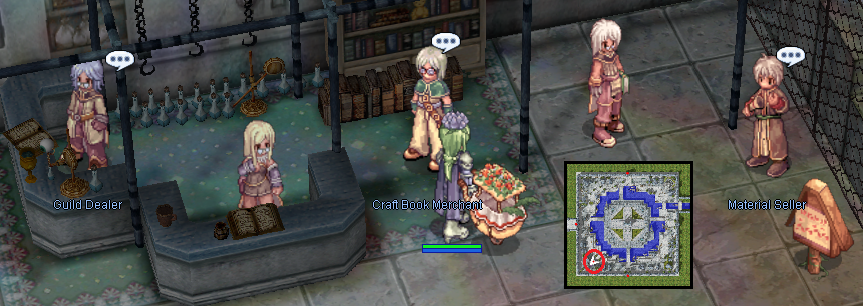 | 492 KB | AloeLeaflet | 1 | |
| 03:28, 2 November 2015 | Halves.png (file) | 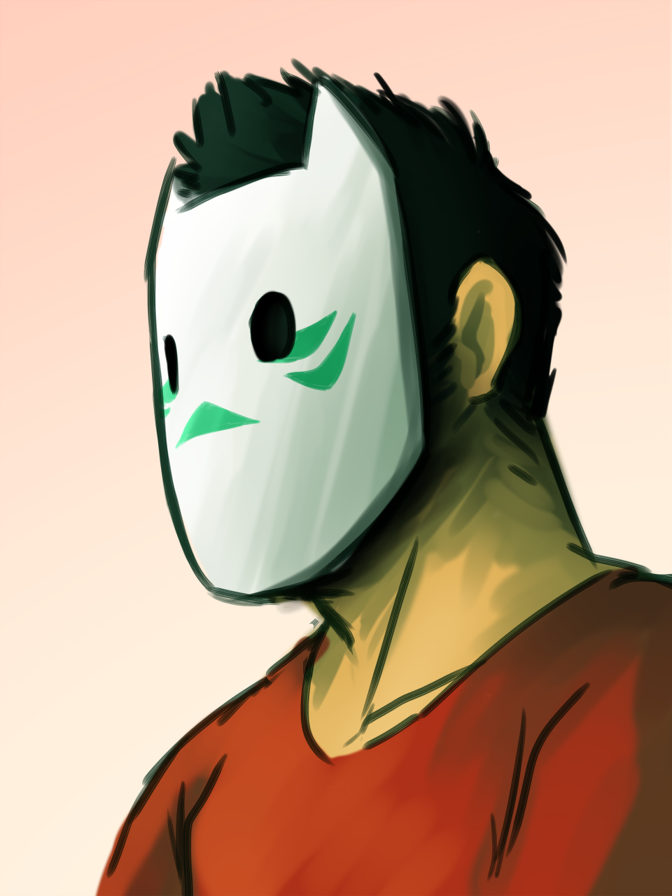 | 501 KB | Halves | Profile Image for Halves. | 1 |
| 15:37, 18 January 2023 | WindHawk.png (file) | 508 KB | Hurt Locker | 2 | ||
| 18:02, 24 November 2018 | Nova RO - Archbishop Party UI tricks.jpg (file) | 512 KB | Hakumen | 1 | ||
| 05:43, 23 April 2022 | Miyu warlock art.png (file) | 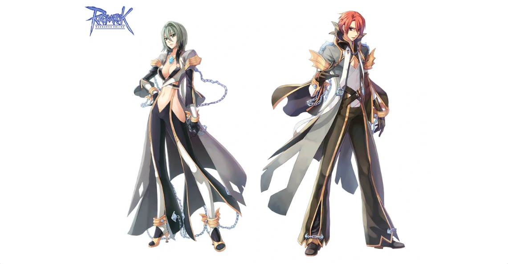 | 521 KB | Miyu | 1 | |
| 07:21, 9 February 2019 | ScreenNovaRO018.png (file) | 528 KB | G5457s | The Super Noobs! The tank build is riding the mastering. Red = Meteor Strike Build. Yellow = Melee Autospell Build. Blue = Mage Build. | 1 | |
| 00:54, 9 May 2019 | Firenodeact.gif (file) | 533 KB | Panic | 1 | ||
| 00:03, 11 May 2019 | Patcher.png (file) | 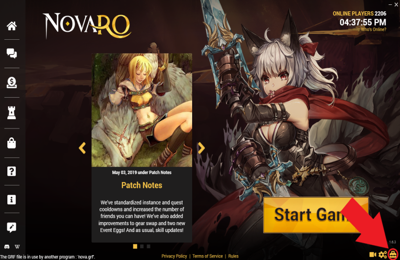 | 536 KB | Colours | 2 | |
| 03:59, 7 December 2022 | Juststopit.png (file) | 542 KB | Kancell | 1 | ||
| 05:51, 16 April 2016 | Rollerino.gif (file) | 543 KB | Ihsan | 1 | ||
| 11:00, 10 February 2021 | 823f6320d6155ef32635e0afacb6de90.png (file) | 551 KB | Ludrath | yuno_archie_location_second | 1 | |
| 08:02, 9 September 2016 | Rebel.png (file) |  |
551 KB | Appleproject | 1 | |
| 14:07, 13 February 2016 | Acidgif2.gif (file) | 553 KB | Adri | 1 |
{kind=link}
{kind=link}
{kind=link}
{kind=link}
{kind=link}
{kind=link}
{kind=link}
{kind=link}
{kind=link}
{kind=link}
{kind=link}
{kind=link}
{kind=link}
{kind=link}
{kind=link}
{kind=link}
{kind=link}
{kind=link}
{kind=link}
{kind=link}
{kind=link}
{kind=link}
{kind=link}
{kind=link}